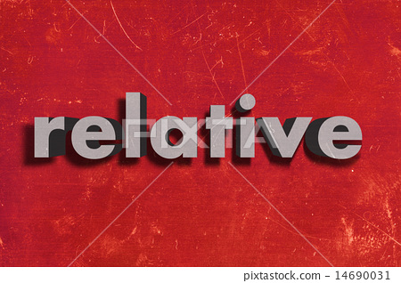

-
Bij het inladen van een bestand is het noodzakelijk om de locatie van het bestand aan te geven. Dit kan op 2 manieren:
- Absolute path
- Relative path
Wat houden deze 2 paths in?
Absolute is de gehele URL naar een bestand. Relatief verwijst naar een URL relatief aan de huidige pagina.
-
Zoek uit welke formaat afbeeldingen er nog meer kan zijn.
Er zijn heel veel afbeeldingsformaten. Maar de meeste bekende zijn: jpg, png, bmp en gif.
-
Zoek uit welke browsers er zijn en maak een lijst van je antwoord.
- Firefox
- Google Chrome
- Internet explorer
- Microsoft edge
- Safari
- Opera
-
Onderzoek hoe het plaatsen van een foto gedaan wordt en plaats deze boven en onderaan je website door zowel gebruik te maken van de absolute path en relative path.
Zie resultaat.
